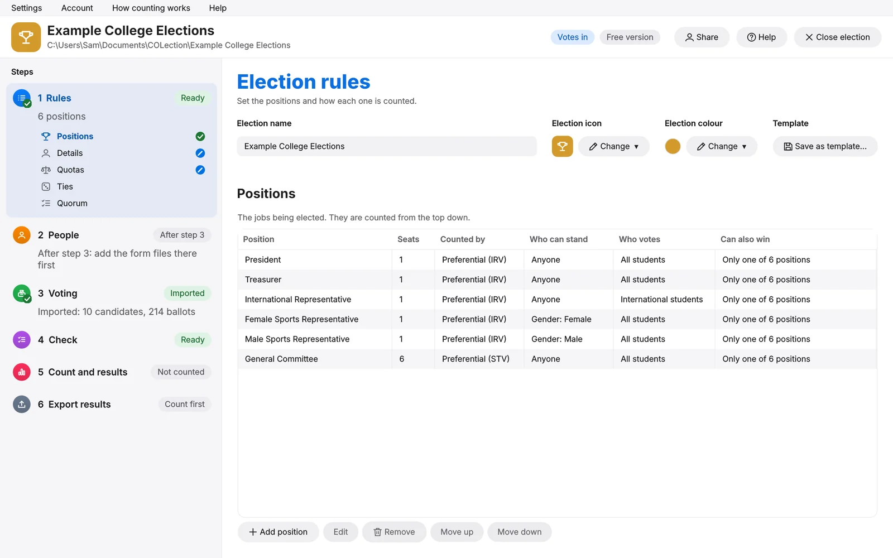
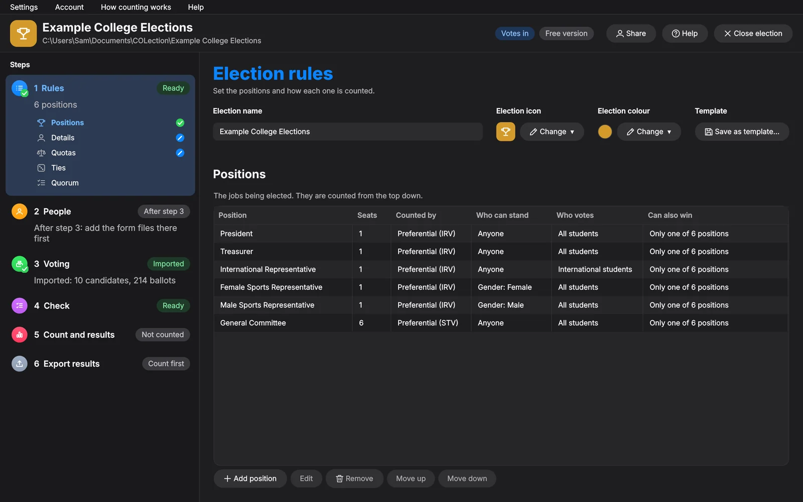
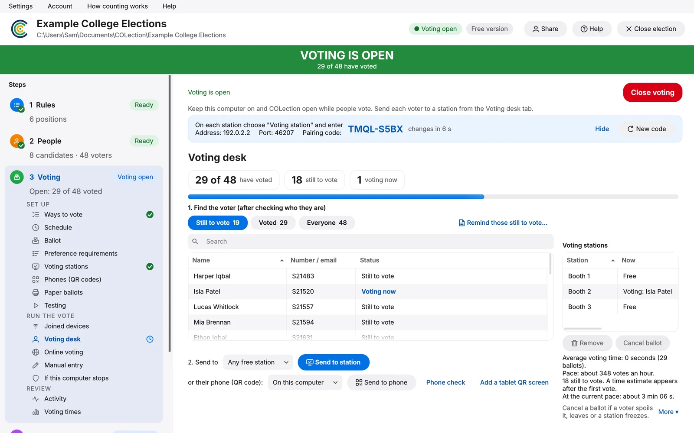

Run your club's election from one laptop.
Nominations, voting on phones, the count and the results. COLection does all of it, for clubs, societies and colleges.
For Windows 10 and 11. Free for up to 50 voters.
Six steps, start to finish.
- 1
Rules
Positions, seats and how each is counted. Or use a template.
- 2
People
Candidates nominate with a form. Load your voter list.
- 3
Voting
On phones, at booths, on paper or from home.
- 4
Check
Problems are caught before you count.
- 5
Count
One click. Winners and every round.
- 6
Export
A signed report and a results page to share.
Your rules, not ours.
One president or a whole committee. Set it up once and save it for next year.
- Preferential, first past the post, approval or Borda
- Quotas, like at least two women on the committee
- Checked as you type, so the rules can't contradict each other


Election night, sorted.
The voting desk shows who has voted, who is voting and which booth is free.
- Voters scan a QR code and vote on their own phone
- Can't make it? Send a personal link to vote from home
- Runs on your local Wi-Fi. No internet needed in the room

See how it was won.
Preferential counts, round by round. Even when the leader doesn't win.
Round 1
200 ballots. 101 votes needed to win.
Built to be trusted.
Secret
Ballots carry no names and no times. Not even the organiser can see who voted for whom.
Safe
If a laptop dies mid-vote, another one takes over from the backup. No vote is lost.
Checkable
Every round is on screen, and the signed report carries a results code anyone can check.
Run it as a team.
Share an election with your committee. Everyone's changes reach everyone within seconds, and you choose who can edit, run voting, or just look.
Sharing uses a COLection Online account.
- Sam Lee
Everything, including deleting itOwner - Ana Kovac
Sets up, counts and invites peopleCo-organiser - Rex Dunn
Runs the voting desk on the dayRunner - Mo Park
Sees everything, changes nothingViewer
Free up to 50 voters.
Bigger elections pay once, by size. No subscription, and nothing is locked when it ends.
Up to 250 voters, one election (30 days), everything included.